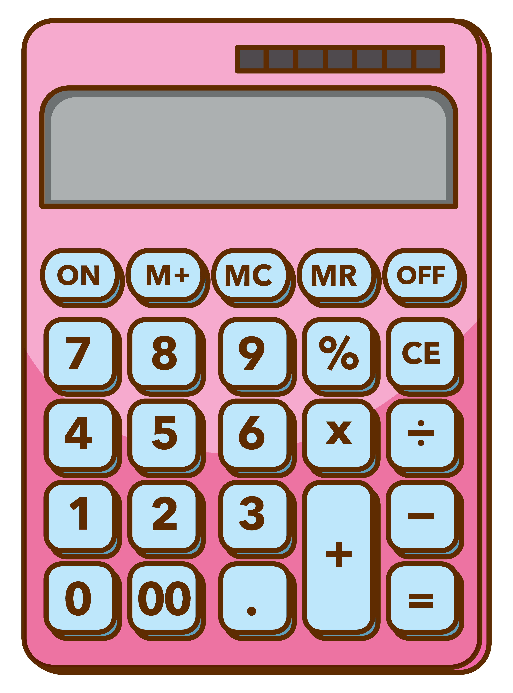

Cálculo de quantidade de novelos para projetos quadrados
1-Faça uma amostra 10cmx10cm com o material e ponto que você vai usar no projeto
2-Pese em uma balança quantos gramas essa amostra tem
3- Insira os valores nos campos abaixo

Cálculo:
Amostra
Área: 100m² Gramas: Projeto
Altura: Largura: Novelo
Quantos gramas tem um novelo da lã que você pretende usar?